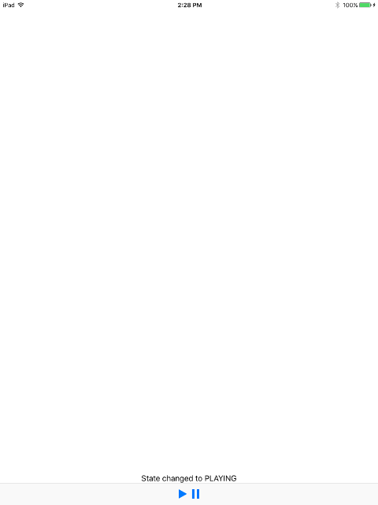

iOS tutorial 2: A running pipeline
Goal

As seen in the Basic and Playback tutorials, GStreamer integrates nicely with GLib’s main loops, so pipeline operation and user interface can be monitored simultaneously in a very simple way. However, platforms like iOS or Android do not use GLib and therefore extra care must be taken to keep track of the pipeline progress without blocking the user interface (UI).
This tutorial shows:
- How to move the GStreamer-handling code to a separate Dispatch Queue whereas UI managing still happens from the Main Dispatch Queue
- How to communicate between the Objective-C UI code and the C GStreamer code
Introduction
When using a Graphical User Interface (UI), if the application waits for
GStreamer calls to complete the user experience will suffer. The usual
approach, with the GTK+ toolkit for example, is
to relinquish control to a GLib GMainLoop and let it control the
events coming from the UI or GStreamer.
Other graphical toolkits that are not based on GLib, like the Cocoa
Touch
framework used on iOS devices, cannot use this option, though. The
solution used in this tutorial uses a GLib GMainLoop for its
simplicity, but moves it to a separate thread (a Dispatch
Queue
different than the main one) so it does not block the user interface
operation.
Additionally, this tutorial shows a few places where caution has to be taken when calling from Objective-C to C and vice versa.
The code below builds a pipeline with an audiotestsrc and
an autoaudiosink (it plays an audible tone). Two buttons in the UI
allow setting the pipeline to PLAYING or PAUSED. A Label in the UI shows
messages sent from the C code (for errors and state changes).
The User Interface
A toolbar at the bottom of the screen contains a Play and a Pause button. Over the toolbar there is a Label used to display messages from GStreamer. This tutorial does not require more elements, but the following lessons will build their User Interfaces on top of this one, adding more components.
The View Controller
The ViewController class manages the UI, instantiates
the GStreamerBackend and also performs some UI-related tasks on its
behalf:
ViewController.m
#import "ViewController.h"
#import "GStreamerBackend.h"
#import <UIKit/UIKit.h>
@interface ViewController () {
GStreamerBackend *gst_backend;
}
@end
@implementation ViewController
/*
* Methods from UIViewController
*/
- (void)viewDidLoad
{
[super viewDidLoad];
play_button.enabled = FALSE;
pause_button.enabled = FALSE;
gst_backend = [[GStreamerBackend alloc] init:self];
}
- (void)didReceiveMemoryWarning
{
[super didReceiveMemoryWarning];
// Dispose of any resources that can be recreated.
}
/* Called when the Play button is pressed */
-(IBAction) play:(id)sender
{
[gst_backend play];
}
/* Called when the Pause button is pressed */
-(IBAction) pause:(id)sender
{
[gst_backend pause];
}
/*
* Methods from GstreamerBackendDelegate
*/
-(void) gstreamerInitialized
{
dispatch_async(dispatch_get_main_queue(), ^{
play_button.enabled = TRUE;
pause_button.enabled = TRUE;
message_label.text = @"Ready";
});
}
-(void) gstreamerSetUIMessage:(NSString *)message
{
dispatch_async(dispatch_get_main_queue(), ^{
message_label.text = message;
});
}
@end
An instance of the GStreamerBackend in stored inside the class:
@interface ViewController () {
GStreamerBackend *gst_backend;
}
This instance is created in the viewDidLoad function through a custom
init: method in the GStreamerBackend:
- (void)viewDidLoad
{
[super viewDidLoad];
play_button.enabled = FALSE;
pause_button.enabled = FALSE;
gst_backend = [[GStreamerBackend alloc] init:self];
}
This custom method is required to pass the object that has to be used as
the UI delegate (in this case, ourselves, the ViewController).
The Play and Pause buttons are also disabled in the
viewDidLoad function, and they are not re-enabled until the
GStreamerBackend reports that it is initialized and ready.
/* Called when the Play button is pressed */
-(IBAction) play:(id)sender
{
[gst_backend play];
}
/* Called when the Pause button is pressed */
-(IBAction) pause:(id)sender
{
[gst_backend pause];
}
These two methods are called when the user presses the Play or Pause
buttons, and simply forward the call to the appropriate method in the
GStreamerBackend.
-(void) gstreamerInitialized
{
dispatch_async(dispatch_get_main_queue(), ^{
play_button.enabled = TRUE;
pause_button.enabled = TRUE;
message_label.text = @"Ready";
});
}
The gstreamerInitialized method is defined in the
GStreamerBackendDelegate protocol and indicates that the backend is
ready to accept commands. In this case, the Play and Pause buttons are
re-enabled and the Label text is set to “Ready”. This method is called
from a Dispatch Queue other than the Main one; therefore the need for
the
dispatch_async() call
wrapping all UI code.
-(void) gstreamerSetUIMessage:(NSString *)message
{
dispatch_async(dispatch_get_main_queue(), ^{
message_label.text = message;
});
}
The gstreamerSetUIMessage: method also belongs to the
GStreamerBackendDelegate protocol. It is called when the backend wants
to report some message to the user. In this case, the message is copied
onto the Label in the UI, again, from within a
dispatch_async() call.
The GStreamer Backend
The GStreamerBackend class performs all GStreamer-related tasks and
offers a simplified interface to the application, which does not need to
deal with all the GStreamer details. When it needs to perform any UI
action, it does so through a delegate, which is expected to adhere to
the GStreamerBackendDelegate protocol:
GStreamerBackend.m
#import "GStreamerBackend.h"
#include <gst/gst.h>
GST_DEBUG_CATEGORY_STATIC (debug_category);
#define GST_CAT_DEFAULT debug_category
@interface GStreamerBackend()
-(void)setUIMessage:(gchar*) message;
-(void)app_function;
-(void)check_initialization_complete;
@end
@implementation GStreamerBackend {
id ui_delegate; /* Class that we use to interact with the user interface */
GstElement *pipeline; /* The running pipeline */
GMainContext *context; /* GLib context used to run the main loop */
GMainLoop *main_loop; /* GLib main loop */
gboolean initialized; /* To avoid informing the UI multiple times about the initialization */
}
/*
* Interface methods
*/
-(id) init:(id) uiDelegate
{
if (self = [super init])
{
self->ui_delegate = uiDelegate;
GST_DEBUG_CATEGORY_INIT (debug_category, "tutorial-2", 0, "iOS tutorial 2");
gst_debug_set_threshold_for_name("tutorial-2", GST_LEVEL_DEBUG);
/* Start the bus monitoring task */
dispatch_async(dispatch_get_global_queue(DISPATCH_QUEUE_PRIORITY_DEFAULT, 0), ^{
[self app_function];
});
}
return self;
}
-(void) dealloc
{
if (pipeline) {
GST_DEBUG("Setting the pipeline to NULL");
gst_element_set_state(pipeline, GST_STATE_NULL);
gst_object_unref(pipeline);
pipeline = NULL;
}
}
-(void) play
{
if(gst_element_set_state(pipeline, GST_STATE_PLAYING) == GST_STATE_CHANGE_FAILURE) {
[self setUIMessage:"Failed to set pipeline to playing"];
}
}
-(void) pause
{
if(gst_element_set_state(pipeline, GST_STATE_PAUSED) == GST_STATE_CHANGE_FAILURE) {
[self setUIMessage:"Failed to set pipeline to paused"];
}
}
/*
* Private methods
*/
/* Change the message on the UI through the UI delegate */
-(void)setUIMessage:(gchar*) message
{
NSString *string = [NSString stringWithUTF8String:message];
if(ui_delegate && [ui_delegate respondsToSelector:@selector(gstreamerSetUIMessage:)])
{
[ui_delegate gstreamerSetUIMessage:string];
}
}
/* Retrieve errors from the bus and show them on the UI */
static void error_cb (GstBus *bus, GstMessage *msg, GStreamerBackend *self)
{
GError *err;
gchar *debug_info;
gchar *message_string;
gst_message_parse_error (msg, &err, &debug_info);
message_string = g_strdup_printf ("Error received from element %s: %s", GST_OBJECT_NAME (msg->src), err->message);
g_clear_error (&err);
g_free (debug_info);
[self setUIMessage:message_string];
g_free (message_string);
gst_element_set_state (self->pipeline, GST_STATE_NULL);
}
/* Notify UI about pipeline state changes */
static void state_changed_cb (GstBus *bus, GstMessage *msg, GStreamerBackend *self)
{
GstState old_state, new_state, pending_state;
gst_message_parse_state_changed (msg, &old_state, &new_state, &pending_state);
/* Only pay attention to messages coming from the pipeline, not its children */
if (GST_MESSAGE_SRC (msg) == GST_OBJECT (self->pipeline)) {
gchar *message = g_strdup_printf("State changed to %s", gst_element_state_get_name(new_state));
[self setUIMessage:message];
g_free (message);
}
}
/* Check if all conditions are met to report GStreamer as initialized.
* These conditions will change depending on the application */
-(void) check_initialization_complete
{
if (!initialized && main_loop) {
GST_DEBUG ("Initialization complete, notifying application.");
if (ui_delegate && [ui_delegate respondsToSelector:@selector(gstreamerInitialized)])
{
[ui_delegate gstreamerInitialized];
}
initialized = TRUE;
}
}
/* Main method for the bus monitoring code */
-(void) app_function
{
GstBus *bus;
GSource *bus_source;
GError *error = NULL;
GST_DEBUG ("Creating pipeline");
/* Create our own GLib Main Context and make it the default one */
context = g_main_context_new ();
g_main_context_push_thread_default(context);
/* Build pipeline */
pipeline = gst_parse_launch("audiotestsrc ! audioconvert ! audioresample ! autoaudiosink", &error);
if (error) {
gchar *message = g_strdup_printf("Unable to build pipeline: %s", error->message);
g_clear_error (&error);
[self setUIMessage:message];
g_free (message);
return;
}
/* Instruct the bus to emit signals for each received message, and connect to the interesting signals */
bus = gst_element_get_bus (pipeline);
bus_source = gst_bus_create_watch (bus);
g_source_set_callback (bus_source, (GSourceFunc) gst_bus_async_signal_func, NULL, NULL);
g_source_attach (bus_source, context);
g_source_unref (bus_source);
g_signal_connect (G_OBJECT (bus), "message::error", (GCallback)error_cb, (__bridge void *)self);
g_signal_connect (G_OBJECT (bus), "message::state-changed", (GCallback)state_changed_cb, (__bridge void *)self);
gst_object_unref (bus);
/* Create a GLib Main Loop and set it to run */
GST_DEBUG ("Entering main loop...");
main_loop = g_main_loop_new (context, FALSE);
[self check_initialization_complete];
g_main_loop_run (main_loop);
GST_DEBUG ("Exited main loop");
g_main_loop_unref (main_loop);
main_loop = NULL;
/* Free resources */
g_main_context_pop_thread_default(context);
g_main_context_unref (context);
gst_element_set_state (pipeline, GST_STATE_NULL);
gst_object_unref (pipeline);
return;
}
@end
Interface methods:
-(id) init:(id) uiDelegate
{
if (self = [super init])
{
self->ui_delegate = uiDelegate;
GST_DEBUG_CATEGORY_INIT (debug_category, "tutorial-2", 0, "iOS tutorial 2");
gst_debug_set_threshold_for_name("tutorial-2", GST_LEVEL_DEBUG);
/* Start the bus monitoring task */
dispatch_async(dispatch_get_global_queue(DISPATCH_QUEUE_PRIORITY_DEFAULT, 0), ^{
[self app_function];
});
}
return self;
}
The init: method creates the instance by calling [super init],
stores the delegate object that will handle the UI interaction and
launches the app_function, from a separate, concurrent, Dispatch
Queue. The app_function monitors the GStreamer bus for messages and
warns the application when interesting things happen.
init: also registers a new GStreamer debug category and sets its
threshold, so we can see the debug output from within Xcode and keep
track of our application progress.
-(void) dealloc
{
if (pipeline) {
GST_DEBUG("Setting the pipeline to NULL");
gst_element_set_state(pipeline, GST_STATE_NULL);
gst_object_unref(pipeline);
pipeline = NULL;
}
}
The dealloc method takes care of bringing the pipeline to the NULL
state and releasing it.
-(void) play
{
if(gst_element_set_state(pipeline, GST_STATE_PLAYING) == GST_STATE_CHANGE_FAILURE) {
[self setUIMessage:"Failed to set pipeline to playing"];
}
}
-(void) pause
{
if(gst_element_set_state(pipeline, GST_STATE_PAUSED) == GST_STATE_CHANGE_FAILURE) {
[self setUIMessage:"Failed to set pipeline to paused"];
}
}
The play and pause methods simply try to set the pipeline to the
desired state and warn the application if something fails.
Private methods:
/* Change the message on the UI through the UI delegate */
-(void)setUIMessage:(gchar*) message
{
NSString *string = [NSString stringWithUTF8String:message];
if(ui_delegate && [ui_delegate respondsToSelector:@selector(gstreamerSetUIMessage:)])
{
[ui_delegate gstreamerSetUIMessage:string];
}
}
setUIMessage: turns the C strings that GStreamer uses (UTF8 char *)
into NSString * and displays them through the
gstreamerSetUIMessage method of the GStreamerBackendDelegate. The
implementation of this method is marked as @optional, and hence the
check for its existence in the delegate with respondsToSelector:
/* Retrieve errors from the bus and show them on the UI */
static void error_cb (GstBus *bus, GstMessage *msg, GStreamerBackend *self)
{
GError *err;
gchar *debug_info;
gchar *message_string;
gst_message_parse_error (msg, &err, &debug_info);
message_string = g_strdup_printf ("Error received from element %s: %s", GST_OBJECT_NAME (msg->src), err->message);
g_clear_error (&err);
g_free (debug_info);
[self setUIMessage:message_string];
g_free (message_string);
gst_element_set_state (self->pipeline, GST_STATE_NULL);
}
/* Notify UI about pipeline state changes */
static void state_changed_cb (GstBus *bus, GstMessage *msg, GStreamerBackend *self)
{
GstState old_state, new_state, pending_state;
gst_message_parse_state_changed (msg, &old_state, &new_state, &pending_state);
/* Only pay attention to messages coming from the pipeline, not its children */
if (GST_MESSAGE_SRC (msg) == GST_OBJECT (self->pipeline)) {
gchar *message = g_strdup_printf("State changed to %s", gst_element_state_get_name(new_state));
[self setUIMessage:message];
g_free (message);
}
}
The error_cb() and state_changed_cb() are callbacks registered to
the error and state-changed events in GStreamer, and their goal is
to inform the user about these events. These callbacks have been widely
used in the Basic tutorials and their
implementation is very similar, except for two points:
Firstly, the messages are conveyed to the user through the
setUIMessage: private method discussed above.
Secondly, they require an instance of a GStreamerBackend object in
order to call its instance method setUIMessage:, which is passed
through the userdata pointer of the callbacks (the self pointer in
these implementations). This is discussed below when registering the
callbacks in the app_function.
/* Check if all conditions are met to report GStreamer as initialized.
* These conditions will change depending on the application */
-(void) check_initialization_complete
{
if (!initialized && main_loop) {
GST_DEBUG ("Initialization complete, notifying application.");
if (ui_delegate && [ui_delegate respondsToSelector:@selector(gstreamerInitialized)])
{
[ui_delegate gstreamerInitialized];
}
initialized = TRUE;
}
}
check_initialization_complete() verifies that all conditions are met
to consider the backend ready to accept commands and tell the
application if so. In this simple tutorial the only conditions are that
the main loop exists and that we have not already told the application
about this fact. Later (more complex) tutorials include additional
conditions.
Finally, most of the GStreamer work is performed in the app_function. It exists with almost identical content in the Android tutorial, which exemplifies how the same code can run on both platforms with little change.
/* Create our own GLib Main Context and make it the default one */
context = g_main_context_new ();
g_main_context_push_thread_default(context);
It first creates a GLib context so all GSources are kept in the same
place. This also helps cleaning after GSources created by other
libraries which might not have been properly disposed of. A new context
is created with g_main_context_new() and then it is made the default
one for the thread with g_main_context_push_thread_default().
/* Build pipeline */
pipeline = gst_parse_launch("audiotestsrc ! audioconvert ! audioresample ! autoaudiosink", &error);
if (error) {
gchar *message = g_strdup_printf("Unable to build pipeline: %s", error->message);
g_clear_error (&error);
[self setUIMessage:message];
g_free (message);
return;
}
It then creates a pipeline the easy way, with gst_parse_launch(). In
this case, it is simply an audiotestsrc (which produces a continuous
tone) and an autoaudiosink, with accompanying adapter
elements.
/* Instruct the bus to emit signals for each received message, and connect to the interesting signals */
bus = gst_element_get_bus (pipeline);
bus_source = gst_bus_create_watch (bus);
g_source_set_callback (bus_source, (GSourceFunc) gst_bus_async_signal_func, NULL, NULL);
g_source_attach (bus_source, context);
g_source_unref (bus_source);
g_signal_connect (G_OBJECT (bus), "message::error", (GCallback)error_cb, (__bridge void *)self);
g_signal_connect (G_OBJECT (bus), "message::state-changed", (GCallback)state_changed_cb, (__bridge void *)self);
gst_object_unref (bus);
These lines create a bus signal watch and connect to some interesting
signals, just like we have been doing in the Basic
tutorials. The creation of the watch is done
step by step instead of using gst_bus_add_signal_watch() to exemplify
how to use a custom GLib context. The interesting bit here is the usage
of a
__bridge
cast to convert an Objective-C object into a plain C pointer. In this
case we do not worry much about transferal of ownership of the object,
because it travels through C-land untouched. It re-emerges at the
different callbacks through the userdata pointer and cast again to a
GStreamerBackend *.
/* Create a GLib Main Loop and set it to run */
GST_DEBUG ("Entering main loop...");
main_loop = g_main_loop_new (context, FALSE);
[self check_initialization_complete];
g_main_loop_run (main_loop);
GST_DEBUG ("Exited main loop");
g_main_loop_unref (main_loop);
main_loop = NULL;
Finally, the main loop is created and set to run. Before entering the
main loop, though, check_initialization_complete() is called. Upon
exit, the main loop is disposed of.
And this is it! This has been a rather long tutorial, but we covered a lot of territory. Building on top of this one, the following ones are shorter and focus only on the new topics.
Conclusion
This tutorial has shown:
- How to handle GStreamer code from a separate thread using a Dispatch Queue other than the Main one.
- How to pass objects between the Objective-C UI code and the C GStreamer code.
Most of the methods introduced in this tutorial,
like check_initialization_complete()and app_function(), and the
interface methods init:, play:, pause:,
gstreamerInitialized: and setUIMessage: will continue to be used in
the following tutorials with minimal modifications, so better get used
to them!
It has been a pleasure having you here, and see you soon!
The results of the search are